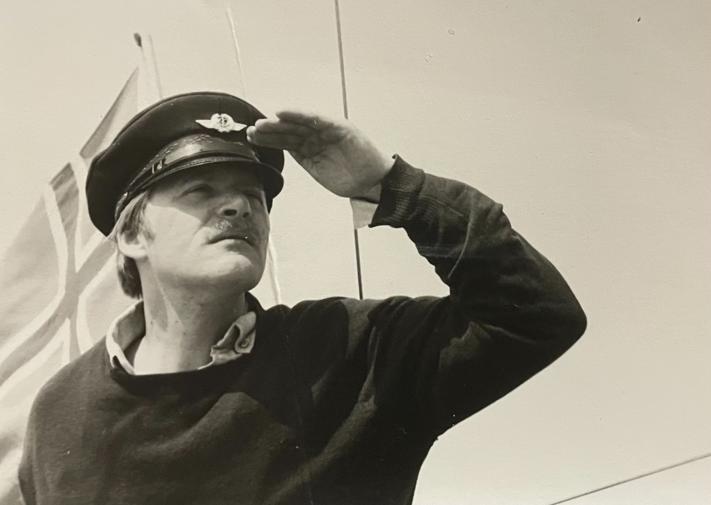
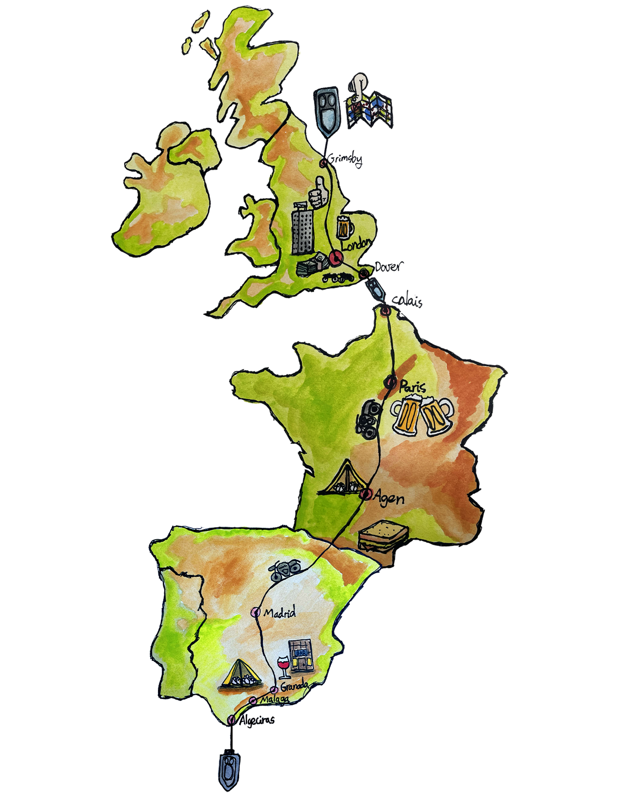
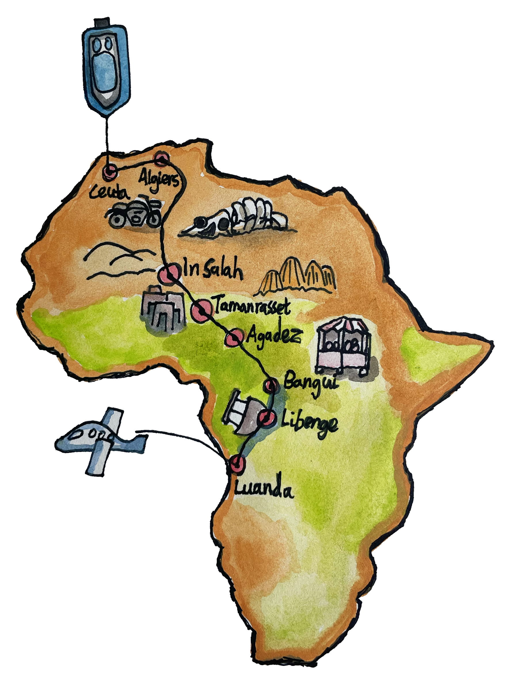
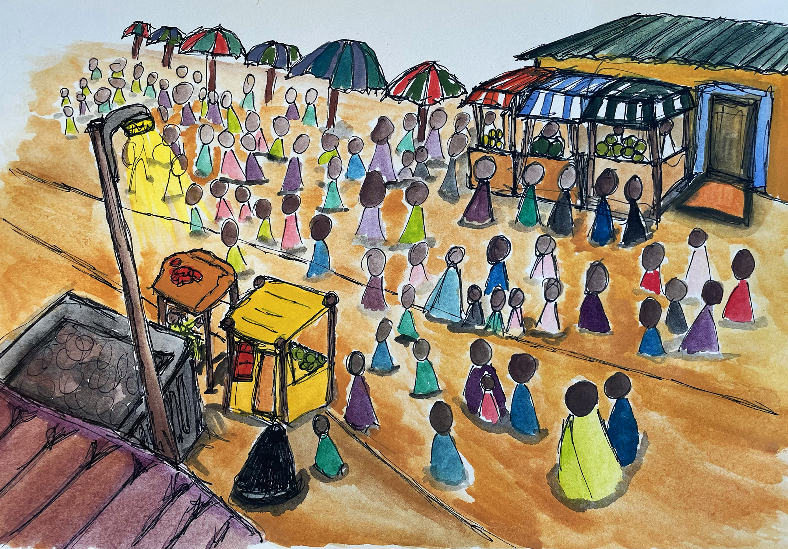
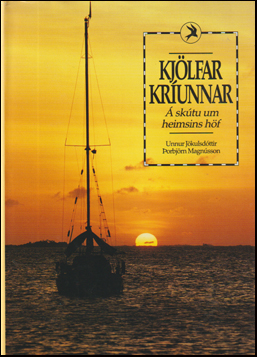
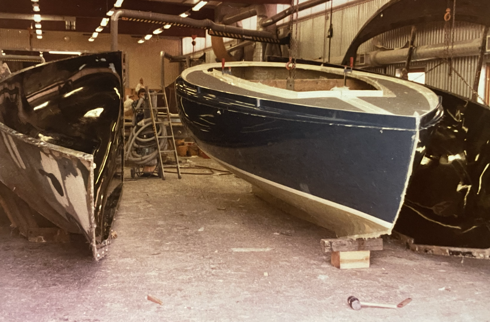
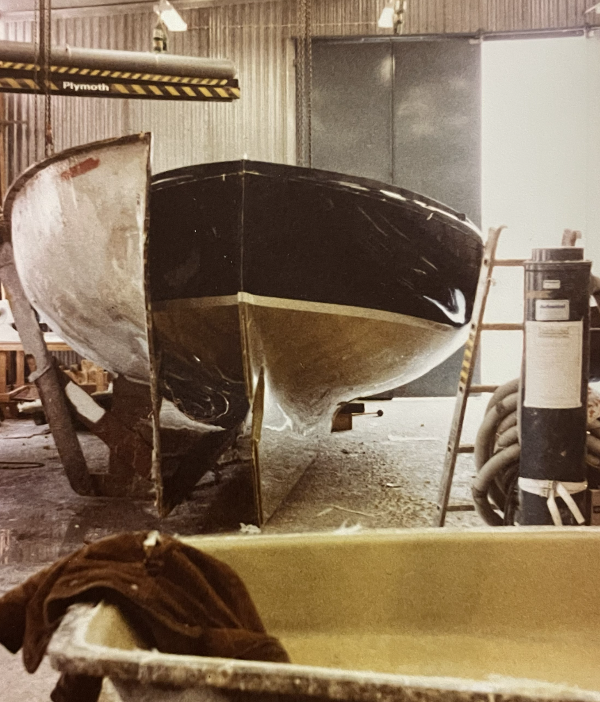
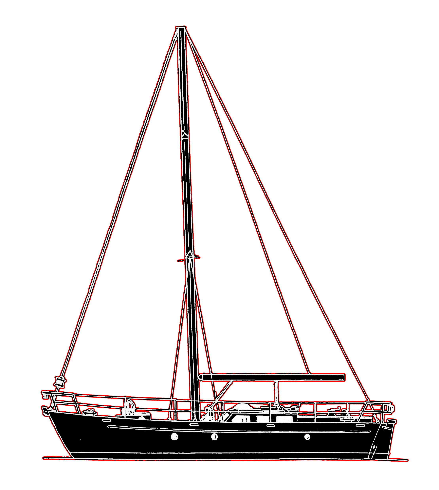

A thesis by Einar Viðar Guðmundsson Supervised by Füsun Türetken

Abstract
My father Guðmundur Thoroddsen passed away in the year 1996 from cancer at the age of 43. I was only a year old. It never bothered me too much as a kid growing up without a father, but of course I didn’t really understand it at the time. Then as I got older, I began to have questions, specifically after graduating high school, I was curious about his life. My father was an artist, musician, guide, and overall kind and funny person. Growing up, I would hear stories of him, usually they were brief and would be about his adventures, the humour, and his laughter which apparently would infect everyone around him. However, this isn’t exactly what this thesis is about. This thesis at its centre, is about bonding with someone closely related to you whom has passed.
It is quite a peculiar feeling to mourn a person that you haven’t known, whom should have been a big part of your life, and taught you a great many things, but here we are. With this thesis, I am searching for questions regarding mourning, a sort of posthumous bonding, and hopefully a decent adventure. Through photographs, maps, stories from friends and family, texts, his former colleagues, and old classmates, I am constructing a story, an approximation, through my father’s old sailboat Drífa, in order to try and bond with him almost three decades after his passing. Further, I am attempting to create more feelings of connection through the objects that he loved. I am investigating a trajectory in which the protagonist are a man and a boat. When did the idea for the sailboat emerge? Where was it built? Where did it sail? where did it ultimately end up? And how the dreams of taking the sailing adventures even further disappeared through the mist of an unexpected illness.
Introduction
The armchair sailor & the beach leopard is a thesis about a son connecting to his late father.
This son is me, Einar. To explain what I mean with the name, an armchair sailor is someone who doesn‘t know how to sail, but knows a lot about sailing, and a beach leopard is a snow leopard that has adapted to a warmer climate. I am the armchair sailor and my father‘s boat Drífa is the beach leopard.
This may sound funny, but you will understand later on in the text what this is referring to.
For in this thesis you will travel from Iceland to North African countries such as Morocco, Algeria, Niger, Nigeria, Cameroon, Sahir, Angola, from Holland, to Shetland Islands, to the Faroe Islands, and from the Canary Islands to Brazil and to Argentina in search of ways to bond with a person who passed away long ago.
The main concerns of this thesis, are mourning, bonding posthumously, and adventure. Through the five chapters of the text we learn about the origins of my fathers adventures, we learn eventually where Drífa the sailboat was built, where she travelled, stopped, and ultimately ended up. Afterwards we go to the time between the selling of Drífa and Guðmundur‘s death, speculating of the future of where his life could have led, had he had more days to live, and we will go into the challenging questions of mourning, dealing with death and confronting it.
Because this thesis will mainly be about my father‘s boat I should introduce the owner a bit more and give you some information to go with the story of Drífa.
Guðmundur Thoroddsen was born in Reykjavík on September the 17th 1952 to parents Drífa Viðar ( a painter, writer and educator ) and Skúli Thoroddsen ( an eye doctor and boxer ). He grew up in Reykjavík for most of his childhood, but was sent to a farm called Staður in Reykhólasveit (which is in the western part of Iceland) in his early teens, he always connected a lot to this place and really felt at home there. Guðmundur studied art, painting, etching and drawing in Iceland, France and Holland from 1974 – 1985 with a few gap years in-between, the names of the schools were Reykjavík School of Visual Arts, Sorbonne University in Paris and the Rijksakademie van Beeldende Kunsten in Amsterdam. His mother Drífa died of an illness in 1971 and his father not long after in 1973, leaving him and his three siblings to fend for themselves, the oldest brother being 25 at the time. I believe his desire to travel and „escape“ most likely started from this rough time, and almost never ended within him. Guðmundur named his sailboat Drífa after his late mother and she would be a big part of his life from 1980-1992 for almost twelve years.
1. Vino, cantina, amigos
Iceland – England – France – Spain – Morocco – Algeria – Niger – Nigeria – Central African Republic – Zaire (now DRC) – Cameroon – Angola – Iceland
In early winter, January 15th 1973 to be precise, Guðmundur and his best friend at the time Þorbjörn Magnússon ( Tobbi ) travel to England by ship, with their aim to reach Northern Africa and the Sahara Desert. Guðmundur was asked by the state radio of Iceland to tell the story of their travels almost ten years after the trip, Guðmundur tells the tale of their travels, and begins by talking about a game they played on board the ship to England.
England-France-Spain

It was a game of picking places to visit by turning around and pointing to the locations on a map they had, where they would like to go. Their first location was Birni-N‘Konni, a town in the Tahoua Region of Niger, lying immediately north of the border of Nigeria, they thought the name was hilarious, seeing as they were around 20 years old at the time. They arrived in England and make their way to London, Guðmundur tells of how they spent their first days in London, how they had not packed for winter since their destination was Africa, and how long it took getting their passports ready for the different parts of the world they were going to visit. It was on the evening before they were going to continue their way to France where they meet a man that tells them their trip through Africa might be more exciting on motorcycles, so the next day they purchase motorcycles, having no clue how to drive in the city traffic of London and barely making it out alive.
That was just the beginning.
They travelled down to France, stopping only for gasoline and most likely cigarettes on their way down to Spain, meeting all kinds of strange and funny people, especially one fellow they met on an evening in Granada, who kept talking to them in spanish, which they did not understand, until his sentence was reduced to three words, vino, cantina, amigos, and for those that don‘t speak spanish this means wine, bar, friends, I‘m sure you can guess the rest of how that evening went.
Guðmundur and Tobbi made their way to Madrid, Granada, driving down and taking a ferry to Ceuta in Morocco, up on a hill there they slept in their tents, not too far away from a military base and woke up the following morning to loud noises and screams, outside their tent stood a dozen armed soliders pointing their guns in their direction speaking to them angrily in Spanish, thankfully the boys could explain the situation that they were travellers and not spies or drug smugglers. After a somewhat warm welcome their destination was Tangier, there they met a group of fellow travellers and decided join them through the Sahara Desert. Their evenings would consist of bonfires in the cold nights, with exchanges of stories, some funny, some nice, some informative, others scary and uncomfortable, those stories were of people whom had either been killed, or were seriously injured during their travels in Morocco, stories you don‘t really want to hear at the start of your journey.
Map of Africa

The other travellers were on a big jeep which of course had more gasoline in the tank than Guðmundur and Tobbi‘s bikes, they started to run low on gas and had found a small town 100 kilometers away on their map and thought they could go there, fill up and meet the other people again, but they had already made it further into Algeria and were long gone, so the boys were on their own again. Their diet consisted of only rice, since they didn‘t have much money with them and sadly shortly after they continued their journey they fell ill for 24 hours with food poisoning, after a miserable night in their tent which was hung up in front of the local police station of the town they gathered their strength in the devestating heat and made it to the city of Oran in Algeria. In Oran they tried to look for their former travelling partners, asking some locals if they had seen their jeep, a young man thought he had seen it the day before. From Oran they went to Algiers and stocked up on all kinds of things, food, gasoline, films for their cameras and had given up on finding the jeep, preparing to go the rest of the trip alone.
Over the Atlas Mountains they drove, but it did not go as smoothly as they‘d hoped, because one the bikes headlights had malfunctioned, luckily they could follow a truck making its way down the mountains so they followed, they hurried up making it over the mountains, because during the night the cold would be unbearable. They made it to a small gas station with a repair shop on its side, the owner let them tent inside his garage which they then did. The weather got warmer the further down they went, and to their great happiness, smooth asphalt roads, but their bikes however did not enjoy the asphalt as much and began to make weird noises and sounds of all kinds, they needed to be repaired. Next stop was In Salah, from there the roads got worse, their bikes malfunctioning, but they were determined to make it to Tamanrasset the final city in Algeria before the big desert, the drive to Tamanrasset was roughly 570 kilometers and it took them 5 days to make it there.
The Hoggar Mountains of Algeria
All around them was beautiful scenery, the Ahaggar National Park surrounds the area with great big rocks and intense colours of red, yellow and orange. In Tamanrasset they met a few Englishmen, whom delivered a message to them from the jeep people, they gave their greetings, but couldn‘t wait for them to go through the desert. Guðmundur and Tobbi instead decided to join the Englishmen, who also had a Danish man with them who coincidentally was a motorcycle repairman, he was able to fix their bikes, except for some unwatned noises. The drive from Tamanrasset to Agadez was partly roads, big distances of only sand with sticks in the ground leading the way, big piles of loose sand would be on the roads, and the motorcyclists would often need to help the cars that got stuck seeing as it was easier for them to get unstuck in the sand, this is very reminiscent of Icelandic weather with snow. When it was time to sleep the boys would either sleep under the cars, or put their bikes together to make a makeshift tent, it could get so warm that they needed to drink seven liters of water a day each. On the roads lay skeletons of camels, abandonded cars and tents, in the evenings they would battle with scorpions as to not get stung. After a few days travel the boys find a well and approaching the well was a long line of camels, that night they joined the owners of the camels for tea, the evening was relaxing and nice with the conversations mostly going by hand gestures and sounds, but they managed to understand eachother just fine. Five days had passed and they had made their way to Agadez which is the central town in Niger, the people there live in tents and the surrounding areas are only sand, very dry and barely any vegetation, the next day the air was quite thick and peculiar, there was a weird feeling in the town and then all of a sudden a stroke of lightning and bucketfulls of rain come pouring down, much to the joy of the local kids and townspeople, they would gather water in buckets to bring home.
Guðmundur and Tobbi continued their journey and saw a sign with the name Birni-N‘Konni the town they originally wanted to go to, it was around ten kilometers away, but funnily enough they really didn‘t want to go there and continued towards the city of Bangui on the border of Central African Republic and Congo. At that time Bokassa the president before he became the self-crowned Emperor of the Central African Republic was reigning, and had put out very strict laws towards thieves, first offense meant losing an ear, second offense meant losing a hand and so on and so forth. Bangui was very lively with all sorts of markets, the boys explored and took in the culture. They stopped in Bangui for a while to sell their motorcycles, after a few more days in Bangui both Tobbi and Guðmundur got Malaria, a life-threatening disease caused by parasites that are transmitted to people through the bites of infected female Anopheles ( mosquitos ), they stayed in their tents for days without being able to eat or move, after a few days they gradually got better. Since their motorcycles were malfunctioning they needed to make a new plan of travel, sell the bikes and try to hitchhike the rest of the trip, the selling of the bikes didn‘t go too well, since the people living there didn‘t have a lot of money, but Tobbi comes running down to Guðmundur one day and tells him that there are military officers interested in buying the bikes, they arrive nicely dressed men with no shoes on asking about the price, but they don‘t buy them and Guðmundur later finds out that it was Bokassas private brass band. No luck seemed to be found selling the bikes, they were forced to sell other things, their tent and some objects they had with them, and then finally someone buys both motorcycles, much to their surprise.

Bangui center, Central African Republic
A German man by the name of Klaus starts up a conversation with Guðmundur, they talk about their plans and decide to travel together, the aim was to row down the Ubangi River, they meet two fishermen and try to buy their boats, but they wouldn‘t sell them, they did however point them in the direction of where they could buy boats and Tobbi, Guðmundur and Klaus went there and bought two boats, nailed them together and go on their way, happy to go away from Bangui since they‘d been there so long.
Ubangi River was a host to many insects and animals, they had been warned by the locals to not go on the banks too early and not sleep too long, since the whole area is home to many crocodiles who stay on land during the night and swim during the day, many types of birds flew above them from the forests as they made their way down, ocassionally the boys would jump in the water to cool down, the river was magnificent, the surroundings beautiful, and they would find themselves staring. One morning they meet a man by the name of Antoine who speaks a bit of French, he asks if he can get a ride to Libenge a town that was an old Belgian colony 50 kilometers away, they oblige and decide to help him out, they park the boat on an island to sleep and see that there are other boats coming there as well, which they don‘t like, there is a bit of tension in the air, until a grey haired man comes over with chickens in a cage, speaking to them, but they don‘t really understand, luckily Antoine could translate and they negotiated some canned food they had for the chickens, however somewhere the translation had been misunderstood and they instead got four eggs, they didn‘t want to put up a fuzz they were fine with the eggs since they hadn‘t had them since in Spain months ago, they boil the eggs after the men have left and every single one of them was spoiled, black and smelling incredibly bad. Continuing on down the river they stop in Lebenge to drop off Antoine and for a doctors visit, because Guðmundur had intense headache and pain in his right ear having lost his hearing, after a few hours at the hospital and a penicillin syringe later they leave to go on their boat, but someone had destroyed their boat leaving them stranded there for three days, they were able to take a ferry from there made their way down to Angola.
Ubangi River
The trip took eight months, from January to September, they would most likely have travelled further, but Guðmundur got the news that his father Skúli Thoroddsen had passed away on August 23rd, and the funeral was to be held September 4th, so the boys packed up in Angola and made their way home. The trip would stay on their minds a lot in the upcoming years, and it seems that their little change in mode of transportation in Central African Republic had bitten them with the boat bug, a bug that would not itch uncontrollably until 1980 when Tobbi and Guðmundur meet in Copenhagen wanting to build sailboats.
The Danish flag
2. Drifa, the sailboat
Photo of Drifa, the sailboat docked in Amsterdam
Drífa the sailboat travelled, explored, discovered many things through its short life, built in
1980 by two lifelong friends Guðmundur Thoroddsen & Þorbjörn Magnússon (Tobbi) in
Copenhagen, its story with one of its main creators Guðmundur spans roughly 12 years, from
ca 1980-1992. Drífa had many friends, visitors and acquaintances and would often invite
them to sail the North Sea and the Atlantic Ocean for long distances and for short, in rough
weather and in good, but as most sailors will say, good weather isn‘t always the best for
sailing. The boat is dark navy bottom, 10 meters long with a single sail. Inside is a wooden
interior, with a sink, bathroom, leather seats, and a bed, a real home away from home for
Guðmundur, he even considered living in it during his studies at the Rijksakademie in
Amsterdam.
Construction of Drifa

The book Kjölfar Kríunnar

Kría

Drífa
Þorbjörn Magnússon ( Tobbi ) and his partner at the time Unnur Þóra Jökulsdóttir wrote the book Kjölfar Kríunnar together and it was published in 1989. In the book there is a chapter that mentions the construction of two sailboats Drífa & Kría. Tobbi writes about how coincidentally both him and Guðmundur had felt the itch of boatbuilding since they had to ditch their motobikes in Africa and sailed to Angola from Cameroon. Both of them decided to pursue their dream together, even though they had not had too much contact in the last years. Both Tobbi and Guðmundur lived in Copenhagen at the time of construction of Drífa & Kría and the whole process took around two years. At the start they would gather texts, books, images, materials and essential equipment, whatever was needed to make the boats. While gathering all the knowledge and equipment they would refer to themselves as armchair sailors, since neither of them had boats, but were both sailors at heart. Drífa and Kría did not differ in size, nor did they differ in elegance, for both boats had two professional armchair sailors under the helm of construction, their main difference was their colors, and of course their names. Kría was a lightblue bottom with red sails, and Drífa a dark navy bottom with white sails. They were built between the years 1980 and 1982, after being finished, the two friends Tobbi and Guðmundur parted ways with their brand new boats, ready for adventures across the ocean for many years to come.
From Amsterdam to Iceland
Drífas first proper adventure on the sea was in 1984, when Guðmundur, and his friends Garðar and Jón sailed from the ports of Amsterdam to the Shetland Islands in Scotland, from there to the Faroe Islands, ending up in Iceland. The journey was not only a bonding moment for the friends, but also for Drífa, this was a chance for her to show what she was made of, a bonding moment between the owner and the boat.
Jón Sigurpálsson & Guðmundur Thoroddsen sailing the North Sea
Drífa was prepped with supplies in the port she was staying at in Amsterdam with water, wine, food, clothes, soap, more clothes, and good company, they made their way through the docks and off they went to the North Sea to begin their journey.
Weather conditions were bad for the first, second and third leg of the trip, but Drífa plunged through the open sea and sailed roughly a thousand kilometers towards the beauty of the Shetland Islands of Scotland. On the way there the crew members of the boat drank, laughed, played harmonicas and took shifts steering and making sure they sailed the right way. Things seemed to be going quite okay besides strong headwinds and heavy rain, the mood on the boat never changed, after a few days sail they made it onto the islands, and took in the scenery, Drífa stayed on the dock and held watch over the supplies, while the crew explored the islands, taking photographs and speaking to the locals. After they had their fill of walking on land, the crew returned to Drífa and headed for the Faroe Islands, seven-hundred kilometers away, resupplied and ready to tackle whatever the North Sea had to offer. Just as the image of the town disappeared behind them through the fog the weather continued to be a nuisance, the story was the same, strong headwinds, heavy rain and overall bad conditions for effective sailing, but persistance is key and surely enough they made their way to Torshavn the capital of the Faroe Islands. Jón got off here and made his way to Iceland on the ferry Norræna which goes from Denmark to Iceland through the Faroe Islands, but before that they of course explored Torshavn and took photos while Drífa stayed her post in the harbour, protecting their belongings. The rest of the journey from Torshavn to Reykjavík, Iceland went smoothly, not as much headwind and rain and better conditions overall.
What was only 8-10 days of travelling from Amsterdam to the Faroe Islands felt to Drífa and the crew like 3-4 years, but that didn‘t stop them from finishing the trip to Iceland.
Drífa had proven herself a sturdy and good boat, ready to face whatever the sea could bring. There would be a few quick trips around places in Iceland, then back to the mainland of Europe, mainly France, with trips to Spain and around that area. The Canary Islands was one of those places and thats where Drífa was left for a while until a friend of Guðmundur Kalli Kafari, sailed on her to Brazil.
3. Dreams of a Bigger Boat

Sketch of Drífa 2.0
Throughout his life, Guðmundur made many different artworks, sculptures and more.
The themes seemed to be about longing and regret, many of his artworks had to do with boats,
ravens, seahorses, and fish. He never explained in vivid detail the meanings, but it can be
associated with the regret of selling Drífa, and it was a way for him to get the sadness out.
A few years before selling Drífa, Guðmundur had envisioned starting a tourist company that
would offer tourists trips on a sailboat to various locations around the Westfjords of Iceland,
offer hike tours and all kinds of camping, but since Drífa was sold, he planned to build a boat
that would be used for that company. A bigger boat made of steel, with more room for guests.
He got as far as the body of the boat when suddenly, he couldn’t work any longer because he
fell ill and passed away shortly after.
In the past I have always felt sad when seeing the unfinished boat. It is a bitter reminder of
the life I didn’t get, the parent I was missing. Sometimes the sorrow would be too much, so
I’d hide it away. As I get older and look at the boat it reminds me of my father’s existence
and of mine. In this unfinished story lies his knack for craft, wishes and dreams.
They flow through my veins, as do his bodily features and yearning for adventure.
With time the boat decays, its patina showing traces of time. It is almost my age, we age together.
It still remains in what my father would call “home for the remainder of his years”, Ísafjörður.
There was hope that the boat could be finished by his sons, but that plan never materialized.
Thus, it is awaiting to be finished, like an unwritten script, filled with potential adventures,
hardships, bonding, laughter, and storms.